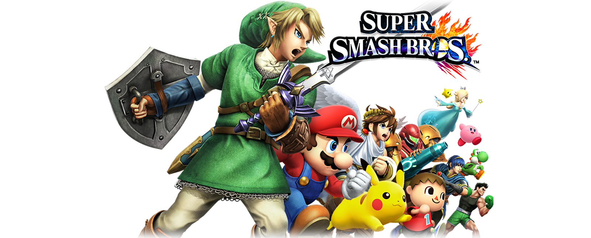

Super Smash Bros for 3DS/Wii U
Super Smash Bros. for Nintendo 3DS/Wii U son unos videojuegos de lucha desarrollados por Sora Ltd. y Bandai Namco Games, y publicado por Nintendo. Fue anunciado por primera vez en el Electronic Entertainment Expo 2011. El juego ha sido publicado para Nintendo 3DS y Wii U.